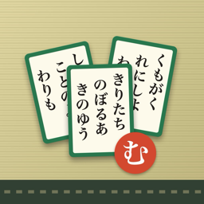

決まり字のかるた
百人一首を、決まり字で覚えて取る
百人一首の100首を、決まり字（上の句をそこまで聞けば、どの歌か決まる最初の音）で覚える iPhone のアプリです。上の句が1音ずつ出るのを見て、畳に並んだ取り札（下の句）を、なるべく早く取ります。
- 上の句が1音ずつ出ます。決まり字は朱色で出ます。分かったら、すぐに取り札を押します
- 百首ぜんぶ・一字決まり〜六字決まり・20首ずつ・苦手な歌から、取る歌をえらべます。場に並べる札は4枚・6枚・8枚
- まちがえた歌は自動で「苦手」に入り、2回続けて決まり字までに取れると外れます
- 百首の一覧で、読み・決まり字・いまのことばでの意味・同じ音で始まる歌（友札）を見られます
- 「変わる決まり字」：読まれた札が増えると、残りの札の決まり字が短くなるのを、札を押して確かめられます
- 決まり字は表から写さず、100首の読みから計算しています（一字決まり7首・二字42首・三字37首・四字6首・五字2首・六字6首）
- 登録はいりません。記録は iPhone の中だけに保存します。課金はありません
現代語訳は、このアプリのために書いたものです。